Supremumsnorm und Supremumsnorm mit der Ableitung nicht topologisch äquivalent
1. Satz
Sei  der reelle Vektorraum der beschränkten, reell differenzierbaren Funktionen, so dass die Ableitung beschränkt ist.
Dann gilt für die Supremumsnorm der Funktion und der Ableitung sowie die kanonische Supremumsnorm, dass sie nicht äquivalent sind.
der reelle Vektorraum der beschränkten, reell differenzierbaren Funktionen, so dass die Ableitung beschränkt ist.
Dann gilt für die Supremumsnorm der Funktion und der Ableitung sowie die kanonische Supremumsnorm, dass sie nicht äquivalent sind.
2. Beweis
Betrachten wir die Funktion 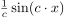 für 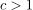 Dann gilt:
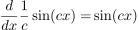
1
Somit folgt:
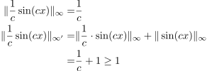
2
Sei im folgenden  und
und  beliebig, so gilt für die epsilon-Umgebungen um
beliebig, so gilt für die epsilon-Umgebungen um  :
:
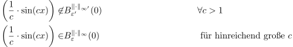
3
Daraus folgt, dass jede Umgebung von für die Norm 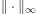 eine Funktion der Art 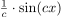 enthält, während für  die Umgebung von für die Norm
die Umgebung von für die Norm  keine Funktion der Form beinhaltet.
Somit folgt, dass eine Umgebung mit 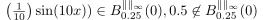 enthält, während für aus 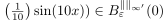 auch 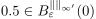 folgt.
Damit sind die Topologien verschieden.
keine Funktion der Form beinhaltet.
Somit folgt, dass eine Umgebung mit 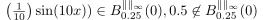 enthält, während für aus 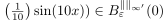 auch 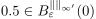 folgt.
Damit sind die Topologien verschieden.